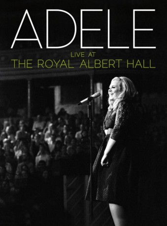

#3700 Adele Live at the Royal Albert Hall
 
 IMDB-Wertung: 8.6 / 10
IMDB-Wertung: 8.6 / 10  Metascore: 0
Metascore: 0 
Anfang September gastierte Adele auf ihrer ausverkaufen UK-Tour in der altehrwürdigen Royal Albert Hall. Wer im Frühjahr eines ihrer Konzerte in Deutschland sehen konnte, weiß, dass diese sehr speziell sind. Adele berührt nicht nur mit ihrer wunderbaren Musik, sondern auch durch ihre unvergleichlich burschikos-charmante Art auf der Bühne, die noch die Zuschauer in der letzten Reihe erreicht. Alle, die dies nicht erleben durften, können sich mit dieser phantastischen Blu-ray beschenken: Ein komplettes Konzert, samt einem Backstage-Report als Bonusmaterial. Und dazu noch das Konzert als Audio-CD.
Jahr: 2011
Dauer: 99 Minuten
FSK:
Land: England Studio: Columbia RecordsTonspuren:
Untertitel:
Auflösung: 720p (1280x544) Größe: 4485 MB
Genre: Musik, Dokumentation
Regisseur: Paul Dugdale
Drehbuch: Johanna Spyri
Soundtrack:
Darsteller:
- Adele als Herself
- Stephanie Cavey als Wired Strings - Violin
- Sarah Chapman als Wired Strings - Viola
- Rosie Danvers als Wired Strings - Cello
- Samuel Dixon als Himself - Bass
- Kelli-Leigh Henry-Davila als Background Vocals
- Sally Jackson als Wired Strings - Violin
- Bryony James als Wired Strings - Cello
- Sharleen Linton als Background Vocals
- Miles Robertson als Himself - Keys
- Wired Strings als Strings
- Ben Thomas als Guitar
- Tim Van Der Kuil als Himself - Guitar
- Derrick Wright als Himself - Drums
Datei: X:\Musik\Adele Live at the Royal Albert Hall (2011, FSK, 1280x544).mkv seit 23.05.2016
Festplatte: HD Serien(SU-Z)+Dokus+Musik
 Es gibt insgesamt 134 Filme in der Gruppe 'Musik'
Es gibt insgesamt 134 Filme in der Gruppe 'Musik'